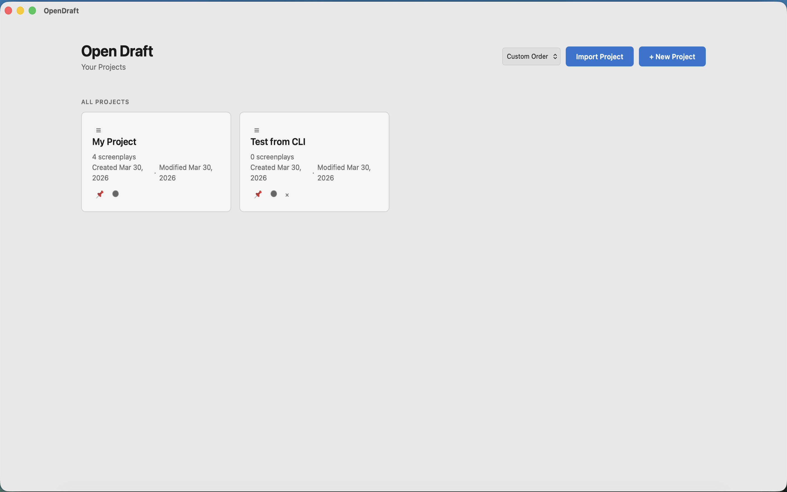
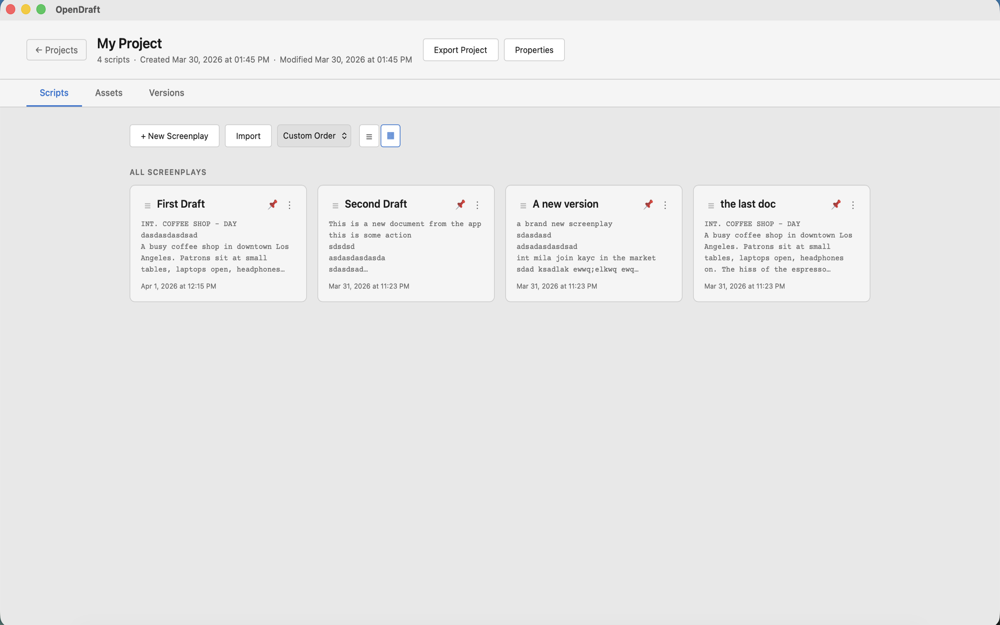

Managing Projects
Organize your screenplays, scripts, and assets.
The Projects Screen
The Projects screen is where you create, open, organize and delete your projects. OpenDraft opens in the editor, so to get here choose File > Manage Projects… (it is also under Tools). The File > Open Script… dialog links here too: Manage Projects… at the bottom, and Manage beside each project’s name to go straight to that project.
On the desktop and mobile apps, the switch at the top of the screen chooses which projects you see: This device for projects stored locally, or OpenDraft Cloud for projects in your cloud account. In the browser, every project is stored in the cloud, so there is no switch.
Syncing a project from this device
In a library project under This device, choose Sync with OpenDraft Cloud to share the whole project with the same account on your other devices: its screenplays and treatments, their names, the project’s details (logline, genre, title-page and production information, colour), its Location Database, and its pictures and other assets. The project stays on this device. On your other devices it appears under OpenDraft Cloud. Changes you save on this device upload in the background. Changes made elsewhere reach an existing screenplay when you open it while online. The project shows when it last synced.
Stop syncing leaves the project and its screenplays on this device and leaves the cloud copy in your account. Start again with the same account and syncing picks up where it left off.
If you delete a screenplay on one side, OpenDraft does not delete it on the other. The screenplay that is left stays where it is and no longer syncs, and the project still shows as synced.
If a screenplay was changed on this device and in the cloud, OpenDraft merges the two, much as a version-control system does. Changes to different parts of the script, such as a line rewritten here and a new scene added on another device, are combined on their own, and both copies end up with both changes. Notes, production tags, character profiles and beats merge one by one in the same way. A screenplay that is open in an editor is not merged under you: it waits until you leave it, or you can settle it with Review and merge.
To check every merge yourself, turn off Merge edits on different lines automatically in Settings › Saving & Backups › Syncing with the cloud. Each screenplay changed in both places then waits under Review and merge, with the changes that do not overlap already combined for you to look over before you save.
If both copies changed the same lines, the project lists the screenplay by name. Choose Review and merge to see each place where they differ, with this device’s text beside the cloud’s and the changed words highlighted. For each place, choose Keep this device, Keep the cloud or Keep both. Use this device for all and Use the cloud for all answer every place at once. When every place has an answer, choose Save merged script. Changes that merged without a question are listed under merged automatically.
The Compare tab shows the same side-by-side or unified comparison as version history, between any two of the copies: the cloud’s and this device’s, either of them and the copy you last synced, or either of them and the merged result.
You can also keep one whole version. Keep this device’s version replaces the cloud version with yours, and Use the cloud version replaces yours with the cloud’s. Either way, the version you do not keep is saved as a new screenplay in the same project, so nothing is lost. If the screenplay is open in another window, close it there first. Screenplays that the cloud would not take because your plan’s screenplay limit is reached are listed too.
Project details and locations merge without asking. If both sides changed the same detail or the same location, this device’s version is kept. Pictures are copied to whichever side lacks them. As with screenplays, deleting a location’s picture or another asset on one side does not delete it on the other.
If the project was syncing with a different cloud account, or its cloud copy was deleted, choose Sync with the signed-in account or Start a new cloud copy. Every screenplay on this device is then uploaded to a new cloud copy.
Renaming a screenplay on one side renames it on the other. If it was renamed differently on both, this device’s name is kept. Version history is not synced, and projects with linked files cannot sync. A synced project cannot be linked to a folder.
Working on cloud scripts offline
In the desktop and mobile apps, open a cloud screenplay while connected to download a copy. When you next open that screenplay, it is available even without a connection. Keep the same account signed in to see its downloads. Saving updates the copy on this device first. OpenDraft uploads pending saves when you reconnect and the app is open.
The editor’s save status shows whether your copy is synced, waiting to sync, or needs attention. The last successful sync time appears beside it. Reopen a synced script while online to get changes from another device.
If another device changed the screenplay before your save could upload, OpenDraft merges the two copies when their changes do not overlap and the screenplay is not open, then uploads the merge. Otherwise it keeps your version on this device, leaves the cloud version intact, and shows a conflict in the editor. While online, choose Review and merge to settle it place by place, or compare the copies, as described in Syncing a project from this device. The merged script replaces the one in the editor.
To keep one whole version instead, choose Use cloud version to replace the device copy, or Upload my version to replace the current cloud version. The version that is replaced is saved as a new screenplay in the cloud project. If the cloud copy changes again before upload, OpenDraft reports a new conflict. If the cloud script was deleted, there is nothing to upload to, so Use cloud version removes the device copy; use File > Save As and choose This device first to keep it. Use cloud version and Upload my version also appear when the server refuses a save, so a script is never left stuck.
Deleting a cloud script or project from this device also removes its downloaded copies and unsynced edits. Signing out clears downloaded copies that finished syncing. Edits still waiting to sync stay on the device for the same account and server.
Offline copies cover downloaded screenplay documents. Project changes, linked folders, images, version history and live collaboration follow their usual storage and connection rules.

The projects list shows each project with its title, creation date, modification date, and status. You can sort projects by:
- Custom order — Drag and drop to arrange however you like
- Title — Alphabetical
- Created date — Newest or oldest first
- Modified date — Most recently edited first
Creating a Project
- Click the + New Project button on the Projects screen.
- Enter a project name.
- On the desktop app, choose where its scripts are saved — the library or a folder on disk (see Saving a Project in a Folder).
- Click Create.
Saving a Project in a Folder
On the desktop app (macOS, Windows and Linux), a project can keep its scripts as ordinary files in a folder you choose — on an external disk, a RAID or a network drive — so the newest copy of every script is already where you keep your work, with no extra backup step. OpenDraft’s library still holds the working copy, with its versions, notes and assets; every save also writes the file.
- New Project asks where to save: The OpenDraft library, or A folder on disk, with the file format to use. A folder project shows a Folder badge.
- File > Open Folder as Project… turns a folder you already have into a project. Its scripts are added, and its files are not changed. A folder called
scripts,draftsor similar is named after the folder it sits in, soMyFilm/scriptsbecomes “MyFilm”. - Inside a project, Storage moves it to a folder (Save to a Folder…), Move to Another Folder…, Show in Folder, Check for New Files added outside OpenDraft, or Save in Library Only….
- Any single script can be saved to a file from its menu: Save to File…, Show File, Stop Saving to File. File > Save to File As… does the same from the editor.
Scripts are saved as OpenDraft (.odraft, which keeps everything), Fountain or Final Draft (.fdx). Renaming a script renames its file. Deleting one asks whether to delete the file too; the answer is no unless you say so.
When a File Is Changed Outside OpenDraft
OpenDraft notices when a script’s file has been changed by another program or another computer, and never writes over it. If you have no unsaved changes, it simply opens the changed version. If you do, it asks:
- Use the File’s Version — opens the file. What OpenDraft had is kept in Version History first.
- Keep OpenDraft’s Version — saves your version to the file, and keeps the other one beside it as Name (changed outside OpenDraft …).
Opening a script without changing it leaves its file exactly as it was.
If the Drive Is Not Connected
Your work is still saved to the library. The status bar says the file is not saved yet, and OpenDraft writes it as soon as the folder can be reached again.
The default folder for new projects, and the file format, are set in Tools > System Settings > Saving & Backups. Folders are a desktop feature: the phone, tablet and browser versions keep projects in the library.
Project Properties
Each project can store rich metadata. Open the properties dialog to edit:
| Field | Description |
|---|---|
| Title | The project name |
| Genre | Comedy, Drama, Thriller, etc. |
| Logline | A one-sentence summary of the story |
| Synopsis | A longer summary of the story |
| Author | The screenwriter's name |
| Contact | Contact information |
| Copyright | Copyright notice |
| Draft | Current draft number (e.g., "Third Draft") |
| Language | Primary language of the screenplay |
| Format | Feature, TV Pilot, Short, etc. |
| Production Company | Producing company name |
| Director | Attached director |
| Producer | Attached producer |
| Status | Development, Pre-production, etc. |
| Target Length | Target page count |
| Notes | Internal notes about the project |
Registration & Legal
Click the Registration & Legal section header in Project Properties to expand additional fields for rights management and submission tracking:
| Field | Description |
|---|---|
| WGA Registration # | Writers Guild of America registration number (e.g., “WGAw #123456”) |
| WGA Registration Date | Date the script was registered with the WGA |
| Copyright Registration # | U.S. Copyright Office registration number (e.g., “PAu 1-234-567”) |
| Copyright Year | Year of copyright (e.g., “2026”) |
| Agent | Agent name and agency |
| Agent Contact | Agent email, phone number |
| Manager | Manager name and company |
| Manager Contact | Manager email, phone number |
Submission Log
Below the registration fields is a Submission Log table where you can track where you've sent the script:
- Date — When the script was submitted
- Submitted To — Company or person (e.g., “Netflix”, “A24”)
- Type — Submission type (e.g., Query, General Meeting, Submission)
- Status — Current status (e.g., Pending, Read Request, Passed, Considering)
- Notes — Any notes about the submission
Click + Add Submission to add a new row. Click the × button to remove an entry. All data is saved with the project automatically.
Note: This is a lightweight tracking tool for personal use. For complex submission pipelines, you may want to use a dedicated service alongside OpenDraft.
Organizing Projects
Color Coding
Assign a color to each project for visual organization. This is useful when you have many projects and want to quickly identify them.
Pinning
Pin important projects to keep them at the top of the list, regardless of sort order. Click the pin icon on a project to toggle.
Drag and Drop
When sorted by "Custom order", you can drag projects to rearrange them in any order you prefer.
Inside a Project
Opening a project shows three tabs:

Scripts Tab
Manage the screenplay files in this project:
- Create new scripts — Click + New Script
- Open a script — Click on it to open in the editor
- Sort scripts — By title, created date, modified date, size, page count, or custom drag-and-drop order
- Pin scripts — Keep important scripts at the top
- Color-code scripts — Assign colors for visual identification
- Rename or delete scripts — Use the ⋮ button on the script (see Deleting a Script)
Assets Tab
Attach reference materials to your project:
- Upload files — Drag and drop images, documents, videos, and other files
- Tag assets — Organize assets with tags
- Preview — View images and videos inline
- Download — Save assets to your computer
- Filter — Search assets by name or tag
Tip: Store character reference photos, location scouting images, mood boards, and research documents as project assets. Reference them in Script Notes using the @AssetName syntax.
Versions Tab
View the version history for the entire project. See Version History for details.
Exporting and Importing a Project
Export Project, inside a project, saves the whole project as a single .zip file. Import Project, on the Projects screen, opens one as a new project. Use them to move a project to another device or to keep a copy outside the app.
- The archive carries every script, including its notes, tags, beats and character profiles, along with each script's color, pin and order, and the project's properties.
- Images in your scripts travel with them when you export from the desktop or mobile app. A project exported from the web version arrives without its images, and the import tells you so.
- Importing never changes an existing project: it always creates a new one. If any script cannot be imported, the message names it.
- Version history is not included in the archive.
Deleting a Project
This works the same for projects on your device and in OpenDraft Cloud.
- Choose File > Manage Projects….
- Pick This device or OpenDraft Cloud at the top, depending on where the project is stored.
- Click or tap the ⋮ (More actions) button on the project’s card.
- Choose Delete, then confirm.
Warning: Deleting a project removes all its scripts, assets, and version history from OpenDraft. This cannot be undone. A cloud project is deleted from your cloud account, on every device you use. For a project saved in a folder, the files in the folder are left where they are.
To keep a copy first, open the project and use Export Project (see Exporting and Importing a Project).
When you delete the last script in a project, OpenDraft asks whether to delete the now-empty project as well. Keep Project is the default, for when you plan to start a new draft there.
Deleting a Script
To remove one script, such as an old draft, and keep the rest of the project, delete it from the editor or from its project.
From the Editor
- With the script open, choose File > Delete Script….
- Type the script’s name in the box. Capital letters and extra spaces don’t matter.
- Click Delete Script.
You then land in the script’s project, with the scripts that are left. Delete Script… is greyed out for a script that has never been saved to a project, and for a file opened from disk with Open File from Disk….
From the Project
Quicker for clearing out several drafts at once:
- Open the project from File > Manage Projects….
- Click or tap the ⋮ button on the script, in either list or card view.
- Choose Delete, then confirm.
Either way, the script is removed from the project, and this cannot be undone. A cloud script is removed on every device. If the script is also saved to a file on disk, the dialog asks whether to delete that file too. The file stays unless you tick the box.